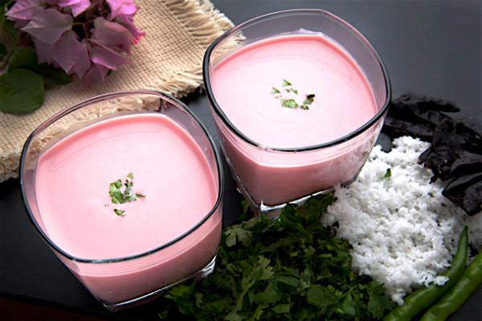

Everyone eats and drinks; yet only few appriciates the taste of food!!
- Blend to a smooth thick milkshake. Taste and if the sugar is less, then you can add more. If the mangoes are very sweet, you can completely skip the sugar. Since both the mangoes and milk were chilled, I did not add any ice cubes. You can add some ice cubes too while blending.
- Pour this thick mango milkshake in glasses till you have enough space at the top for ice cream scoops.
- Place one or two vanilla or mango ice cream scoops.
- Top with the sliced dry fruits and chopped mangoes. Garnish with the glazed cherries.
- Serve mango mastani immediately with a spoon as well as straw.

Mango Shake
- Slice a few dry fruits like pistachios, almonds and cashews. Keep them aside with 4 to 5 glazed cherries.
- Peel, chop 3 large mangoes and add them to the blender or mixer jar. Instead of fresh mangoes, you can also use mango pulp or puree.
- About 3 to 3.5 cups of mango pulp or puree can be used. Later, just add milk accordingly, based on the consistency of the pulp or puree.
- Reserve 2 to 3 tbsp of chopped mangoes aside for topping the mastani drink later.
- Add 2 to 3 tbsp sugar in the blender jar.
- Add 1.5 cups full cream milk.
 Mango
Mango{kind=link}
{kind=link}